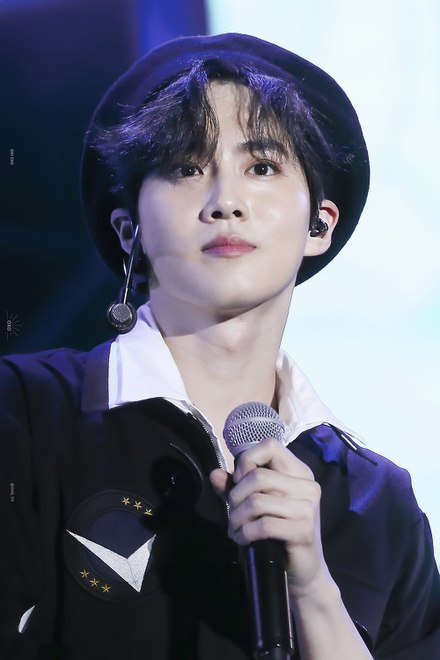
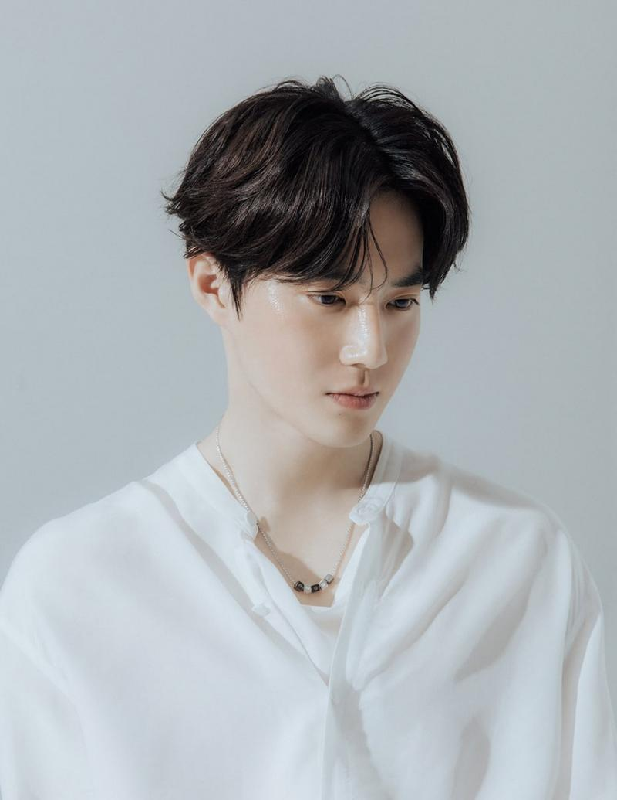

Я вітаю тебе на цій сторінці про популярну корейську
группу ЕХО, залишайся з нами:)

Я вітаю тебе на цій сторінці про популярну корейську
группу ЕХО, залишайся з нами:)
| Псевдонім | Сухо |
| Справжнє ім'я | Кім Чунмьон |
| Родився | 22 травня 1991 року |
| Родом з | Сеул, Південна Корея |
| Ріст | 173 см |
| Група крові | АВ |
Сухо (수호) - південнокорейський співак і
актор. Він є лідером чоловічої групи EXO і її
під-групи EXO-K.
Він дебютував сольно 30 березня 2020
року з міні-альбомом Self-Portrait.
Кім Чунмьон, також відомий під псевдонімом Сухо (кор. 수호, англ. Suho) - народився 22 травня 1991 року в Сеулі, Республіка Корея. Крім діяльності своєї групи, Сухо також знявся в різних телевізійних дорама і фільмах, таких як «Поїздка в один кінець» (2016), «Зірка всесвіту» (2017) і «Багатий чоловік» (2018). 14 травня 2020 року був зачислений на службу в армію.
 